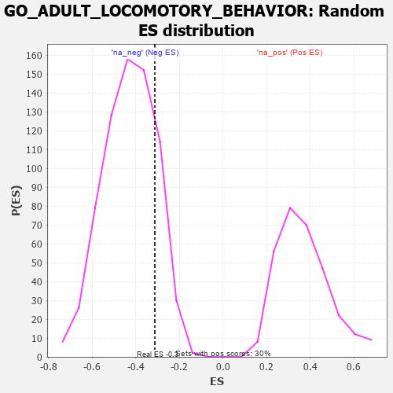

| | | Dataset | 7d |
| Phenotype | NoPhenotypeAvailable |
| Upregulated in class | na_neg |
| GeneSet | GO_ADULT_LOCOMOTORY_BEHAVIOR |
| Enrichment Score (ES) | -0.3128867 |
| Normalized Enrichment Score (NES) | -0.7302495 |
| Nominal p-value | 0.81922525 |
| FDR q-value | 1.0 |
| FWER p-Value | 1.0 |
Table: GSEA Results Summary
 Fig 1: Enrichment plot: GO_ADULT_LOCOMOTORY_BEHAVIOR
Fig 1: Enrichment plot: GO_ADULT_LOCOMOTORY_BEHAVIOR
Profile of the Running ES Score & Positions of GeneSet Members on the Rank Ordered List
| PROBE | GENE SYMBOL | GENE_TITLE | RANK IN GENE LIST | RANK METRIC SCORE | RUNNING ES | CORE ENRICHMENT | | 1 | HTRA2 | | | 527 | 0.621 | 0.0537 | No |
| 2 | NTAN1 | | | 1120 | 0.459 | 0.0681 | No |
| 3 | HIPK2 | | | 2389 | 0.247 | -0.0435 | No |
| 4 | BTBD9 | | | 2407 | 0.245 | 0.0017 | No |
| 5 | WDR47 | | | 3823 | 0.023 | -0.1716 | No |
| 6 | GLRA1 | | | 3957 | 0.001 | -0.1881 | No |
| 7 | EPS8 | | | 4474 | -0.088 | -0.2358 | No |
| 8 | DRD2 | | | 5088 | -0.221 | -0.2701 | Yes |
| 9 | SCN1A | | | 5260 | -0.261 | -0.2411 | Yes |
| 10 | EPHA4 | | | 5273 | -0.265 | -0.1914 | Yes |
| 11 | GRIN1 | | | 5381 | -0.291 | -0.1486 | Yes |
| 12 | GLRB | | | 5776 | -0.398 | -0.1211 | Yes |
| 13 | PPT1 | | | 6038 | -0.485 | -0.0602 | Yes |
| 14 | NPC1 | | | 6364 | -0.602 | 0.0154 | Yes |
| 15 | CTNS | | | 7044 | -0.965 | 0.1165 | Yes |
Table: GSEA details [plain text format]

Fig 2: GO_ADULT_LOCOMOTORY_BEHAVIOR: Random ES distribution
Gene set null distribution of ES for GO_ADULT_LOCOMOTORY_BEHAVIOR